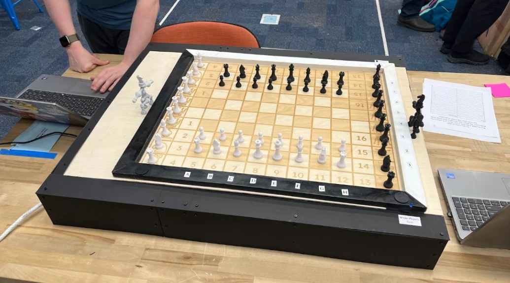
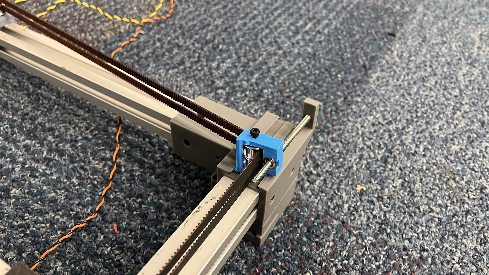
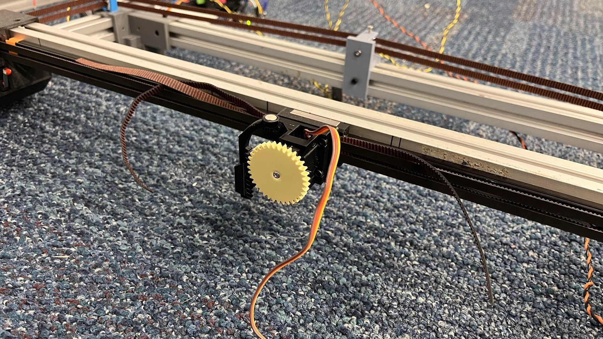

Masterpiece automated chessboard
A 35 × 28 in. automated chessboard that moves magnetic pieces with a concealed CoreXY gantry and a servo-driven permanent-magnet carriage.

My contribution
I designed board mounts and co-designed the belt tensioners, magnet carriage, and side panels. I integrated laser-cut and 3D-printed components into the assembly and coordinated mechanical interfaces within the enclosed board.
Mechanism development
The team moved from limited motor-mount adjustment to screw-driven belt tensioners for more controllable belt tension. A servo-driven rack-and-pinion mechanism raised and lowered a permanent magnet to engage and release pieces.
Outcome and next iteration
The prototype supported human-vs.-computer and computer-vs.-computer play through computer-based move entry. Physical human-move sensing remained a partially integrated stretch goal.
Testing also exposed flex and play in printed tensioner parts, giving the team a clear target for a stiffer future iteration.
Visuals
Selected CAD, test data, and simulation outputs from the project.



More engineering work
Return to the main portfolio for mechanical design, controls, thermal-fluid modeling, and manufacturing projects.